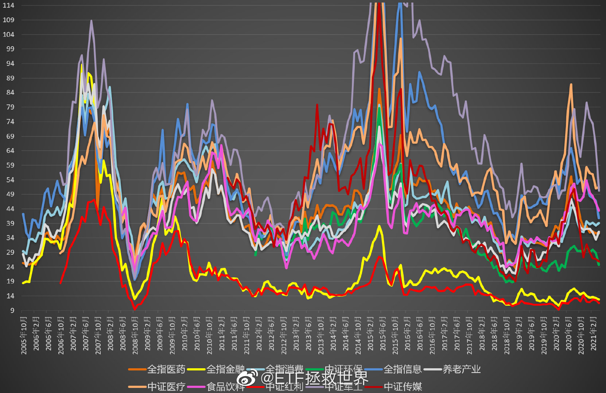

回复@鹏城烟的枪:股票的估值可以没有上限，甚至可以亏损都没关系。但一个指数不可能所有成分股都是那么NB的成长股，如果一个指数那么贵了，说明已经疯狂了。//@鹏城烟的枪:回复@ETF拯救世界:这个也适用于新能源车、芯片吗？@ETF拯救世界:有朋友发私信问我怎么看军工，便宜不便宜，能不能买。我送大家一张图，放假没事儿自己研究研究吧。 
大家看这个图的时候要注意：不是说绝对值便宜的指数就一定比贵的指数有前途。没那么简单。如果投资那么简单，所有人买最便宜的股票就好了。这个还要结合行业前景，利润增速，市场喜好等因素。但这张图可以告诉你一件事：想要不翻船就永远不要买太贵的东西。一次两次没事，但总有一次会让你十年白干@ETF拯救世界:有朋友发私信问我怎么看军工，便宜不便宜，能不能买。我送大家一张图，放假没事儿自己研究研究吧。
回复@ETF拯救世界:其实你想，260倍最高，那么130倍买入的人一两个月也能赚一倍。这时候你说他买是对是错呢？130倍不敢买的人，看到胆子大的人一两个月赚了一倍，应该羡慕嫉妒吗？投资这件事非常有意思。@ETF拯救世界:有朋友发私信问我怎么看军工，便宜不便宜，能不能买。我送大家一张图，放假没事儿自己研究研究吧。